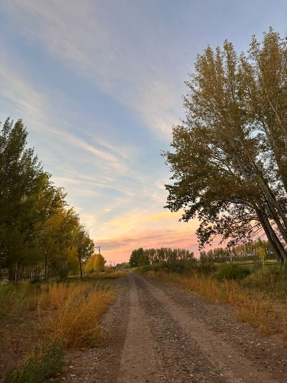
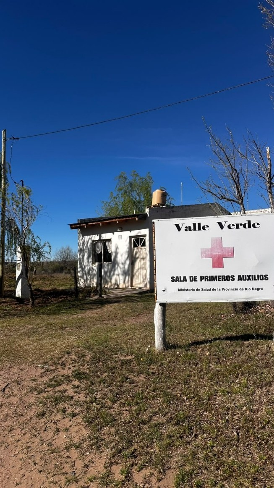
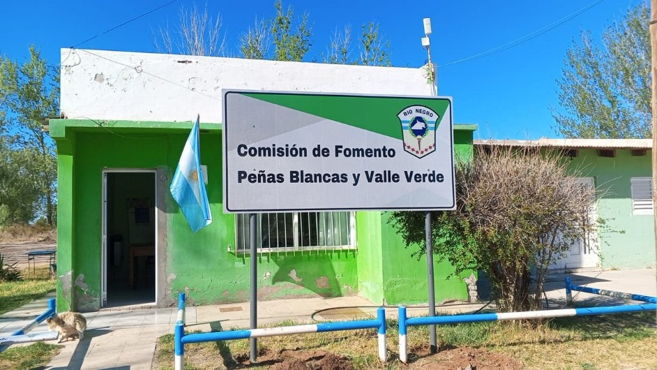

¿Alguna vez pensamos en todo lo que necesitamos para estar bien en el lugar donde vivimos?
En Valle Verde tenemos un paisaje que queremos mucho, pero también hay cosas que nos preocupan, como la atención de la salita, la seguridad y la falta de respuestas de la Comisión de Fomento.
Por eso elegimos mostrar algunas fotos de nuestro paraje y contar, con nuestras palabras, lo que vemos y lo que creemos que se podría mejorar.
Nuestro paisaje
Valle Verde es un lugar con muchos árboles, caminos y paisajes que forman parte de nuestra vida. Para nosotros es importante cuidar este entorno, porque es el lugar donde vivimos.

La salita
La salita es un lugar muy necesario. Muchas veces no hay atención médica cuando la necesitamos, y creemos que estaría bueno que haya más días de atención y más recursos para los vecinos.

La seguridad
La seguridad también nos preocupa. Hay situaciones en las que no nos sentimos tan seguros, por eso pensamos que tendría que haber más atención en el paraje.
La Comisión de Fomento
La Comisión de Fomento también debería escuchar más a los vecinos y acompañar estos pedidos. Necesitamos que se preste más atención a los problemas que tenemos en Valle Verde.

Valle Verde es nuestro lugar y queremos seguir disfrutándolo. Cuidar el entorno, mejorar la atención de la salita y tener más seguridad también es cuidar a nuestra comunidad.